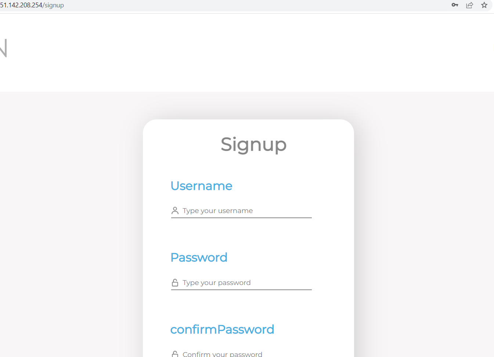
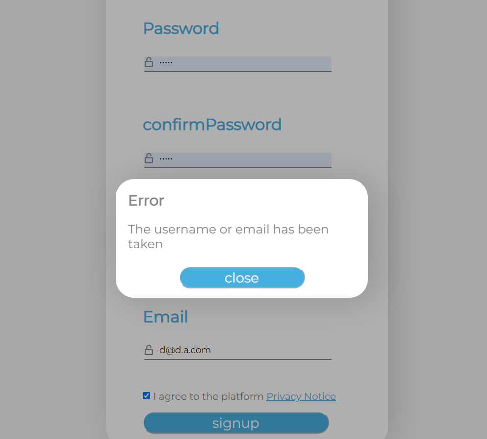
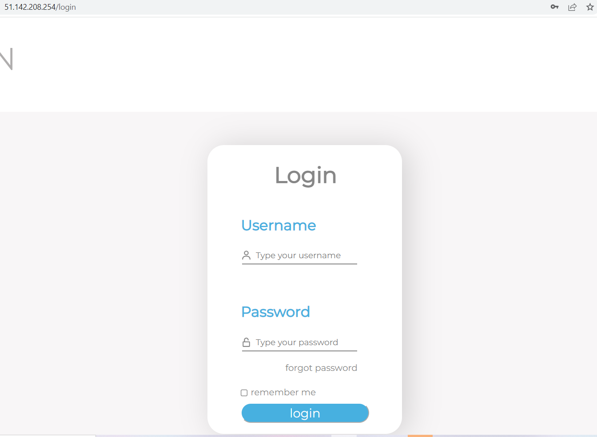
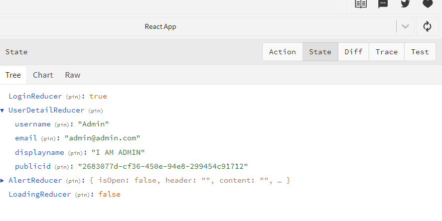
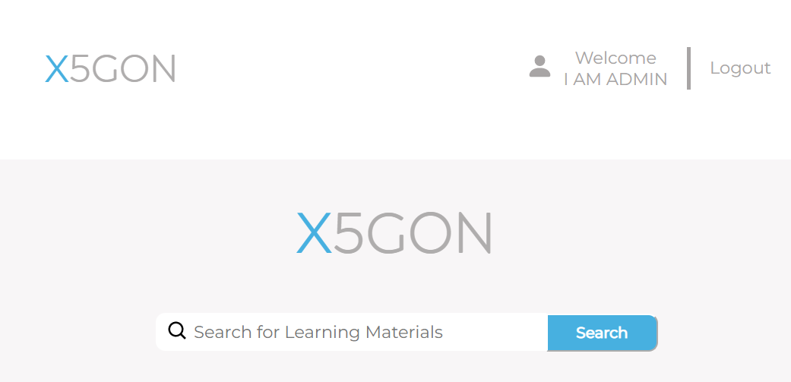

User Data/Login Implementation
User Login Implementation
We create a PostgreSQL to collect the user details. We made the following API endpoint: register, login, and user-detail for handling the user action related to login functionality
Related API implementation
Register - /register
- we collect the username, password, displayname, and email from the user. After that we are quering the database if the username and email has been taken. If those are not taken the new user will be generated with the following parameter userID,
username, password(hashed with salt), salt, displayname, public-id(the id expose to the frontend), timestamp
Login - /login
- we collect the username, password from the user. If that user does exist the API will make the json web token (JWT) using genJWT() with expired date
User Details - /user-detail
- we collect the JWT from the user. Then we check if the token is valid by using jwt_token() function. If the JWT is valid we are going to send user-details
Implementation on the frontend
Register
- we make a form to collect user input then fetch API

- Then redirect to login page after user is registered
- and warn the user if the username/email is taken by pop up our alert components

Login
- Normally, the user will not be login. User islogin and user detail are stored in the redux and backed-up in the localstorage
- User can login via login form

- If user is sucessfully login, the frontend will recieve JWT token from the api, which store in the cookies. After that, the frontend will fetch the api for retrieving user-detail which will update the user-detail and login status

- Later, the application will re-direct back to main page

User Data Implementation
We create a PostgreSQL to collect the search-history and click-history. We made the following API endpoint: search-history and click-history for handling the user action related to user data functionality
Related API implementation
Search History - /search-history
- This endpoint objective is to collect user data when user searching. We collect the user Query, Filter, TopDocumentID and PublicID from the user. If that user does exist, PublicID's value is null
Click History - /click-history
- This endpoint objective is to collect user data when user click on the url. We collect the username, password from the user. If that user does exist the API will make the json web token (JWT) using genJWT() with expired date
Implementation on the frontend
Search History
- After the user finish searching for the query. The application will make a temporary store query in the session storage "search_result". Then the react useEffect hook will check if the session storage "search_result" is not null. Then the
frontend will fetch api to collect search-history
Click History
- When the user click on the search result, collectClickHistory(), function that collect document_id document_pos and search_id, function will be triggered